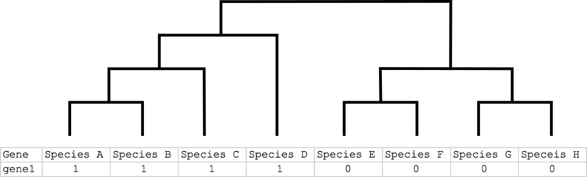
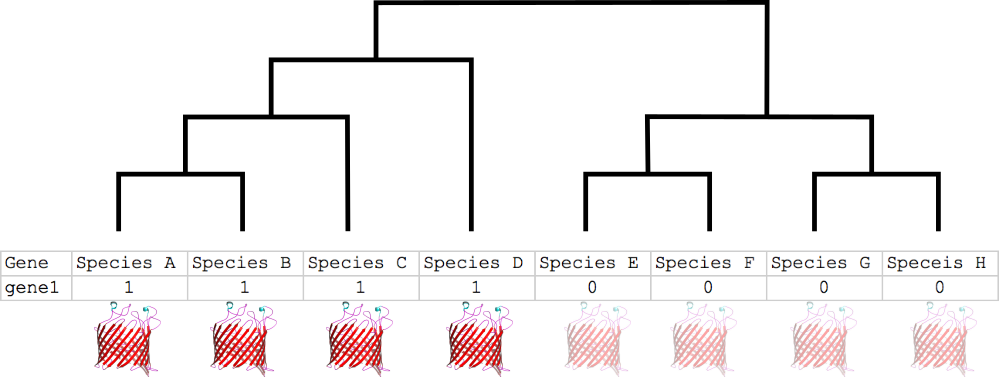
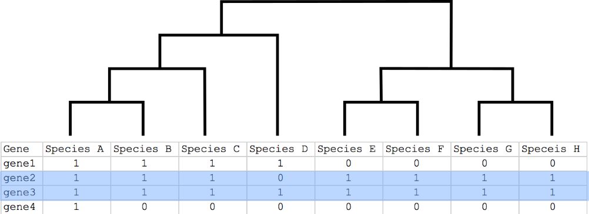
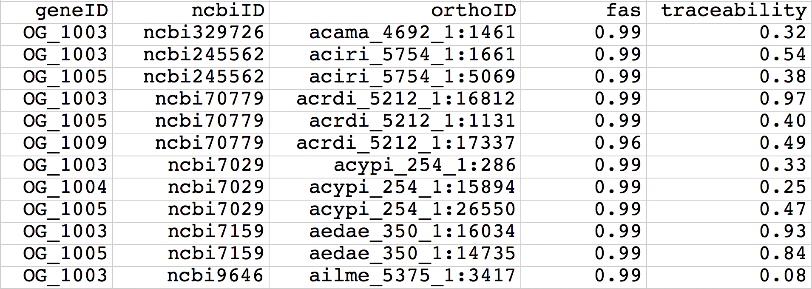
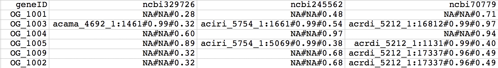
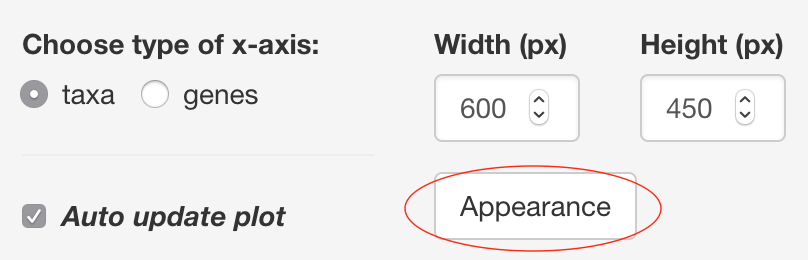
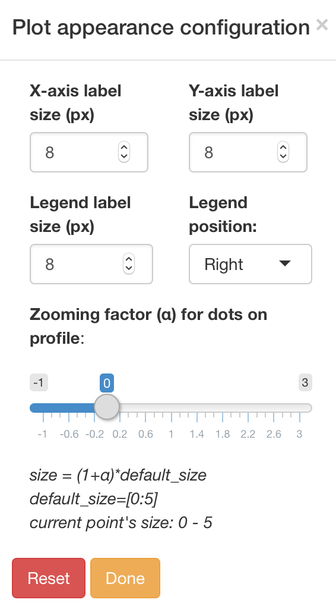
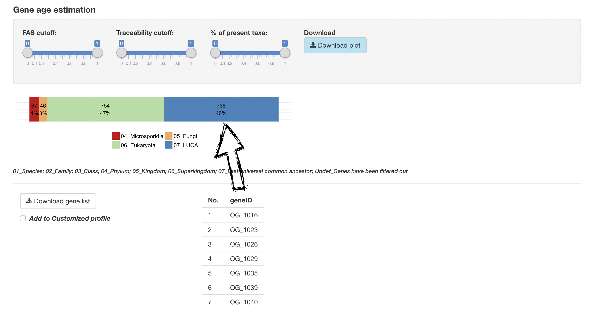
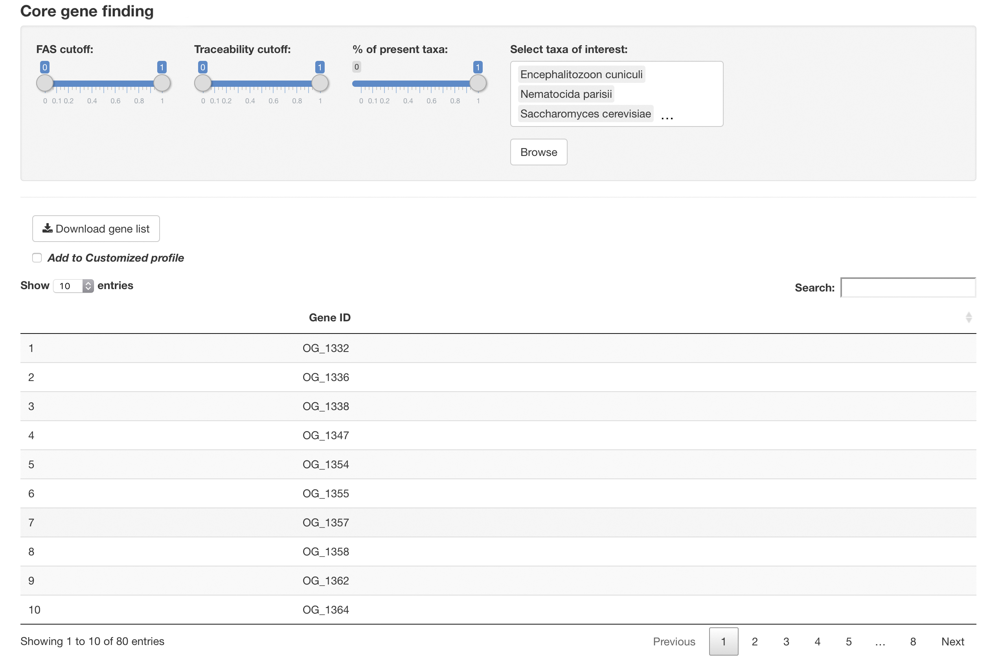
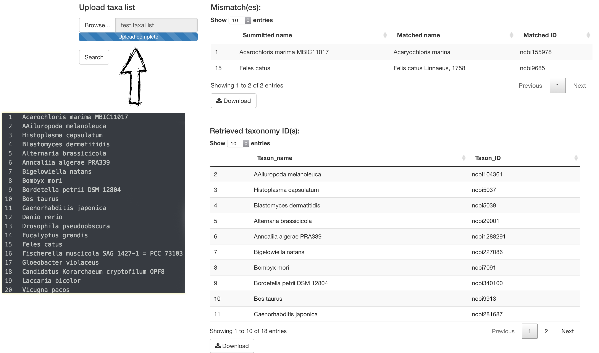

Main input
presence/absence pattern + up to 2 additional variables

orthoXML format
supported by OMA, OrthoMCL, InParanoid, Hieranoid, Panther, Roundup, etc.
*Click here for "How to use OMA orthoXML file"
Phylogenetic profiles

Phylogenetic profiles

=> transfer functions between orthologs
Phylogenetic profiles

=> trace functional protein clusters or metabolic networks across species
Phylogenetic profiles
PROBLEM:
=> increase the informativeness of orthology assignemnt by using complementary information
PhyloProfile tool


Multi-layers
=
presence/absence pattern + two additional layers of information
Main input
presence/absence pattern + up to 2 additional variables
orthoXML format
supported by OMA, OrthoMCL, InParanoid, Hieranoid, Panther, Roundup, etc.
*Click here for "How to use OMA orthoXML file"
Main input
presence/absence pattern + up to 2 additional variables
long format
tab delimited file containing 5 columns: geneID, ncbiID ("ncbi"+taxonID), orthoID, var1, var2
Main input
presence/absence pattern + up to 2 additional variables
matrix (wide) format
each cell contains orthoID#var1#var2
Variables

Configurations


Seed taxon selection

higher taxonomic level = more general analysis
Profile appearance


Variable thresholds


dynamically filter profile
Point's info

info of a selected point on the profile

Domain architecture plot

for comparing protein architectures
Profile clustering

cluster similar profiles based on a distance matrix
*list of selected genes can be submitted to customized profile
Distribution analysis

Gene age estimation
*list of selected genes that have he same estimated age can be submitted to customized profile
Core gene identification
search for genes that have orthologs in all selected taxa
*those genes can then be submitted to customized profile
Search NCBI taxonomy IDs
for a given list of taxa names
filtered data & sequences from main and customized profiles
* If in-paralogs are present, option "Download representative sequences" will select only one sequence for each species for downloading
Help
Links
online version: phyloprofile.shinyapps.io/phyloprofile
standalone version: github.com/BIONF/phyloprofile
contact: tran@bio.uni-frankfurt.de